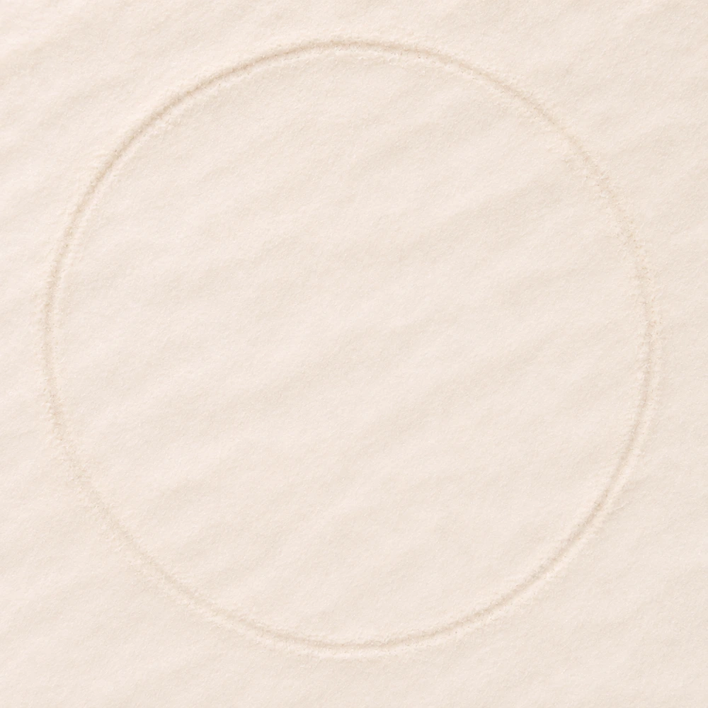

Отметь начало последней менструации
Дневник
Источники ориентиров питания
DRI (RDA/AI), для натрия и калия — обновление 2019 года. Это не верхние допустимые уровни и не назначения добавок. Для процентов нужна дата рождения; используются женские справочные значения. Для детей младше года и беременности/лактации вне возраста 14–50 лет автоматические ориентиры не рассчитываются. Вес не используется как множитель норм витаминов. Индивидуальные заболевания и назначения врача здесь не учитываются.
Таблицы DRI ↗Добавь первую тему — ту, что тебе сейчас близка.
Выбери тему выше или добавь свою.
Подари внимание себе
Я достойна любви и заботы.
Пусть сегодня найдётся немного времени на то, что наполняет именно тебя.
Подписка
Платные тарифы и оформление подписки пока не подключены.
Моя заметка
Записи за день

ОТМЕТЬ НАЧАЛОцикла—день цикладо менструациинет данных
Фаза и дата следующей менструации — ориентировочная оценка.
Рекомендации
Забота о себе
Добавь дату начала менструации. Здесь появятся примерный день цикла и мягкие подсказки.
Прогноз по датам не подтверждает овуляцию и не подходит для контрацепции. При нерегулярном цикле, беременности и гормональной контрацепции он может быть неприменим.
02 / ВОССТАНОВИТЬ СИЛЫ
Сон и отдых
Сон и восстановление
Указывай обе даты, если сон пересекает полночь. Пересекающиеся записи не суммируются.
—
Суммируем ночной и дневной сон по дате пробуждения. Среднее — по дням с записями; дни без данных не считаются нулевыми. На графике последние 14 дней выбранного периода.
03 / ПОДПИТАТЬ СЕБЯ
Питание без строгих правил
Что было в тарелке?
Все значения — на 100 г съедобной части. Состав зависит от продукта и приготовления.
О справочных данных →О распознавании еды
✧ СЛЕДУЮЩИЙ ЭТАП
Дневник с ИИ
Голосовая запись распознаёт распространённые названия продуктов и порции. Распознавание по фото пока не подключено. Сейчас расчёт работает по справочным данным и этикеткам; отображаются витамины, минералы, клетчатка и жирные кислоты при наличии данных. Даже ИИ не определит точный состав блюда без сведений о продуктах и порциях.
Баланс за день
0 ккалНутриенты
Как читать ориентиры
В основном списке оставлены нутриенты с RDA/AI и инозитол. Для некоторых возрастов ориентир не установлен — вместо процента будет пояснение. Ванадий, сера, кобальт и другие показатели без установленной нормы убраны из выбора; прежние данные сохранены. Данные АЛК/ЭПК/ДГК в БАДах объединены в одну запись омега-3.
RAE — эквиваленты активности ретинола; DFE — пищевые фолатные эквиваленты; NE — ниациновые эквиваленты; α-ТЭ — эквиваленты α-токоферола. Минералы и витамины не делятся на макро- и микроэлементы.
Показаны только внесённые продукты и БАДы. 100% — ориентир общего потребления, не назначение дозировки и не верхний допустимый уровень. БАДы в КБЖУ не включены: для этого нужен полный состав добавки.
Моя база продуктов
Добавь продукт с этикетки или по средним справочным данным. Все значения — на 100 г. База сохраняется в этом браузере. Изменения продукта не меняют уже внесённые порции.
Найти продукт в большой базе
Поиск в открытом каталоге Open Food Facts, в том числе по штрихкоду. Запрос передаётся этому сервису. Записи заполняют участники: сверяй состав с упаковкой. Интернет нужен только для поиска; сохранённые продукты доступны офлайн.
Источник: Open Food Facts · база ODbL. Каталог не содержит все существующие продукты и не гарантирует полноту состава. Импортированные продукты остаются личными; мы не отправляем их обратно в каталог.
ДОБАВКИ ЗА ВЫБРАННЫЙ ДЕНЬ
0 записейБАДы и витамины
Запиши принятые добавки: название и количество действующего вещества по этикетке. Это дневник, а не подбор добавок или дозировок. В одной записи омега-3 можно указать общую массу и состав АЛК/ЭПК/ДГК. Омега-6 из выбора БАДов убрана. Для комплекса добавляй каждое вещество отдельной строкой под одним названием.
Витамин D: 1 МЕ = 0,025 мкг. МЕ витаминов A и E, а также фолиевая кислота без DFE и ниацин без NE сохраняются отдельно, без автоматического сложения с эквивалентами. Приём добавок и дозы стоит согласовать с врачом.
МАЛЕНЬКИЙ ГЛОТОК ЗАБОТЫ
0 млВода за выбранный день
Можно ввести любое целое число миллилитров. Для стакана и бутылки запоминается свой объём. Записываем выпитое, без обязательной нормы.
Голосовая запись
Расскажи, что ела, как спала или тренировалась. Проверь распознанные записи перед добавлением в дневники.
Активность
Тренировки
Другие записи
Настройки
Дневник и профиль хранятся в этом браузере.
Изменить сведения обо мне →Аккаунт
Мои данные
Сейчас приложение работает без регистрации. Профиль и записи хранятся в этом браузере; вход и синхронизация между устройствами пока не подключены.
Изменить сведения обо мне →Подписка
Платные тарифы и оформление подписки пока не подключены.
Подключённые девайсы
Здесь будут твои устройства
Подключение часов, фитнес-браслетов и умных весов пока не доступно. Автоматический импорт измерений ещё не подключён.
Библиотека
Место для полезных материалов
Библиотека пока пуста. Здесь появятся материалы о питании, сне и самочувствии.
Друзья
Твоё пространство общения
Раздел подготовлен. Добавление друзей и общение пока недоступны.